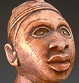

|  |
| Yombe Figure Seated on Stool |
Spirits Embodied: Art of the Congo
October 1, 1999 – July 2, 2000
Gallery 241
The seventy-one sculptures in this exhibition provide visitors with a chance to experience art from some of Africa’s most famous creative centers. This selection of masterpieces represents the geographic as well as the stylistic diversity of Central Africa.
A catalogue, Spirits Embodied: Art of the Congo, accompanies the exhibition.
Send us your comments.